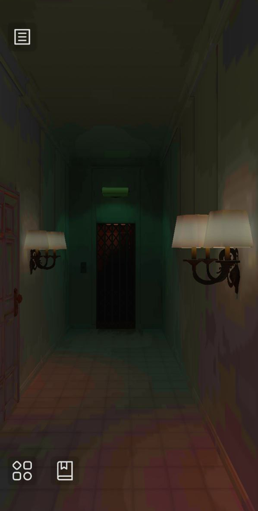

A VIRTUAL MEMORIAL FOR THE LACK OF PHYSICAL ONES
– The development of 13 Rosas, a game about the horrors of fascism and the Spanish Civil War
🌹🌹🌹🌹🌹🌹🌹🌹🌹🌹🌹🌹🌹
Casilda de Zulueta | gatdesoia.es/talks/13r
THE INTERACTIVE PASTS CONFERENCE 3
VALUE Foundation | 24th-26th May 2023 | Leiden, Netherlands
WHO AM I?
- Casilda de Zulueta (Casi).
- Freelancer:
- Technical artist.
- Animator.
- Indie game developer.
- Animation teacher.
- #FemDevsMeetup 💚 co-organizer.

Ask me for stickers later.
WHO ARE WE?
Game design & art: Casilda de Zulueta.
Sound design & music: Francisco de Zulueta.
Programming: Daniel Palacio Samitier.
English translation: Catriel Salamié.
German translation: Rüdiger Brandis.
French translation: Esperanza Vela Cabezas.
WHAT IS 13 ROSAS ?
🌹🌹🌹🌹🌹🌹🌹🌹🌹🌹🌹🌹🌹



A HORROR ADVENTURE GAME
- Mobile-first, first-person adventure horror
- Many of the potential players do not own a dedicated gaming device,
but they own a phone.
- Many of the potential players do not own a dedicated gaming device,
- Players explore a nightmarish, impossible building to find 13 roses and retrieve them to the guarding creature
- Think Slenderman but instead of 8 pages, 13 roses.
- Currently playable: v. 0.3 on gatdesoia.itch.io/13-rosas
- Spanish, Catalan, English, German & French.
- Development timeline:
- ??/??/2020 - I need to make this game.
- 12/07/2022 - v 0.1 (master thesis build).
- 05/08/2022 - v 0.2 (public demo release).
- 25/10/2022 - v 0.3 (major bugfix update).
- 11/05/2023 - v 0.3+ (German & French releases).
A VIRTUAL MEMORIAL
- ... for the lack of physical ones
- "Memory culture? Never heard of her."
- Exhumations started in 2006.
- We do have landmarking memorials... to the fascists (e.g.: Valle de los CaÃdos).
- "13 roses" as in "Trece Rosas"
- the given name of a group of socialist women executed after the end of the Spanish Civil War.
- Getting it out of my system
- nothing scarier than fascism.
THE SYMBOLS

- An audiovisual pledge to the social advances of the Second Republic and the antifascist resistance
- Picasso's Guernica
- Lorca's Misiones Pedagógicas with La Barraca.
- The monolith to the International Brigades.
- Gerda Taro's (half Robert Capa) photographies.
- A written memory of the horrors and causes of fascism (but no depictions of fascist paraphernalia)
- Deaths, famine and disapperances statistics.
- A whole puzzle inspired on Umberto Eco's Ur-Fascism text.
SPAIN (LAST ~100 YEARS)
NO FUNDINGS SO FAR 💸
- Initial "gain" was to finish my studies.
- Then I saw I'm not the only one missing games dedicated to this somber period of our history.
- Funding any sort of company is a full-time job, or a very slow one.
- We want it co-op.
- Based in two countries (Spain and Germany).
- No more dedicated work until there is money on the table.
RECEPTION
PRESS
- 📻 La valenciana Casilda de Zulueta nos presenta la demo del videojuego inspirado en las '13 Rosas' (02/08/2022). Hoy por Hoy: Comunitat Valenciana with Jèssica Crespo and Quique Lencina. Cadena SER.
- 📰 Una aventura de terror fascista sobre las '13 rosas': “Los videojuegos sirven para contar la historia de forma interactiva†(05/08/2022). Lucas Marco. elDiario.es.
- 📰📻 13 Rosas: el videojuego como vÃa de reparación para la memoria histórica (08/08/2022). Elena Cortés Alonso. AnaitGames.
- 📺 Un joc per a ensenyar memòria històrica (08/08/2022). Maria Jesus Jorge. À Punt NTC.
- 📰 13 Rosas. Un memorial para nuestros horrores (26/08/2022). Antonio Flores Ledesma. Nivel Oculto.
- 📻 VIERNES CAFETERO (minute 58:30) (23/09/2022). Fernando BerlÃn. La Cafetera - Radiocable.com
- 📺 Plaça TÃsner - Núm. 80: El Memefest i la cultura del mem (minute 1:46:07) (07/03/2023). Susana Pérez Alonso for Plaça TÃsner (Laura Sangrà Herrero). Betevé.
FESTIVALS & CONFERENCES
- A MAZE. Berlin XI - Hypertalks (17/05/2022).
- A MAZE. Berlin XII - Open Screens (12/05/2023).
- The Interactive Pasts Conference 3 (24-26/05/2023).
AVOIDING TARGETED HATRED
- So far, the game is so irrelevant for the general audience that we are yet to receive any insults or threats, but that doesn't mean it won't happen. Default measures:
- Disable comments where possible.
- Establish an alternative language that goes under the radar of hateful name+manynumbers🇪🇸 accounts (i.e.: "🌹🌹🌹🌹🌹🌹🌹🌹🌹🌹🌹🌹🌹" instead of "Trece Rosas").
- Fascism is anticonstitutional in Germany, my social media accounts filter out nazis by default.
AUDIENCE
- Originally, this was not for the gamers
- "Not everything is a game, this is insulting."
- "This is a great resource to start a conversation with our younger generations."
- Well, actually
- 12-year-olds love horror indies.
- Rather get them into antifa creepypasta than the manosphere.